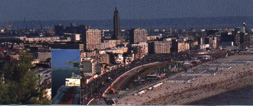
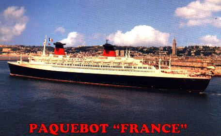
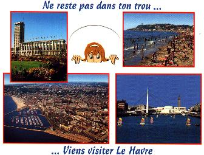

La ville du Havre doit tout, ou presque, à à deux hommes. L'un l'a inventée, l'autre l'a réinventée. Le premier l'a créée, le deuxième l'a façonnée. Si l'un en a fait un port royal, l'autre a redessiné la ville. Ces deux hommes, vous l'aurez compris, sont François Ier et Auguste Perret. Entre les deux : cinq siècles. Cinq siècles d'histoire qui ont fait cette ville aux mille et un visages. Car disons-le tout net, Le Havre, ce n'est pas que du béton ; Le Havre, c'est aussi la mer, le port, la plage, de belles avenues et des kilomètres carrés de verdure. Le Havre, c'est toute une architecture mise au service de la population et de son bien-être, entre tradition classique et modernisation. Le Havre, c'est la " poésie réinventée du béton ". Le centre ville est d'ailleurs le premier ensemble urbain européen du XXe siècle inscrit sur la liste du Patrimoine mondial de l'Unesco.



Some postcards from Le Havre, France
 to visit the official site
of Le Havre city click here
to visit the official site
of Le Havre city click here
 Retour à ma home page : back to the server home page
Retour à ma home page : back to the server home page